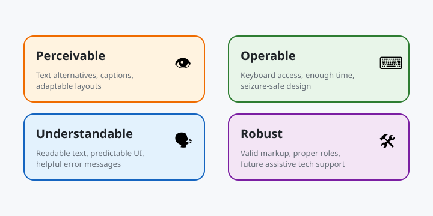
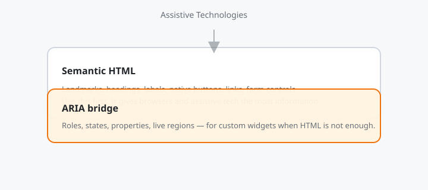

Web Accessibility: Semantic HTML, ARIA, Screen Readers
Chapter 1
Introduction
Web accessibility, often written as a11y , means designing sites and apps so people with disabilities can perceive, understand, navigate, and interact with them. It is not a feature you bolt on at the end; it is a quality of good markup, design, and code. This tutorial covers semantic HTML, ARIA, keyboard navigation, screen readers, visual design, and testing.

WCAG is organized around four principles: Perceivable, Operable, Understandable, and Robust.
Before you start
- Basic HTML and CSS.
- Some JavaScript is useful but not required.
- No special software needed; free screen readers and browser tools are enough.
What you'll learn
- ✓ Why accessibility matters for users and business
- ✓ Semantic HTML and landmarks
- ✓ ARIA roles, states, and properties
- ✓ Full keyboard navigation
- ✓ Screen reader basics and labels
- ✓ Color, contrast, motion, and focus
- ✓ Automated and manual testing
- ✓ Real-world accessible patterns
Real-world systems prioritizing accessibility
- Gov.uk is built accessibility-first; every form, page, and interaction is tested with assistive technology.
- Apple bakes VoiceOver support into Safari and every operating system, so web apps must work with it.
- BBC maintains an inclusive design framework and publishes reusable accessible components.
- Microsoft tests Office 365 and Teams web apps with screen readers, high contrast, and keyboard-only workflows.
- Deutsche Bank and Barclays are legally required to meet WCAG standards across public web services.
Chapter 2
Why Accessibility?
Accessibility is about people. Over a billion people worldwide live with a disability that affects how they use the web. Accessible design also helps power users, people on mobile devices in bright sunlight, and anyone using voice control or a keyboard.
The four WCAG principles (POUR)
Perceivable
Information must be presentable in ways users can perceive. Text alternatives, captions, and adaptable layouts.
Operable
Users must be able to operate the interface. Keyboard access, enough time, and seizure-safe design.
Understandable
Information and UI operation must be understandable. Readable text, predictable behavior, and helpful errors.
Robust
Content must work with current and future assistive technologies. Valid markup and proper roles.
Business and legal reasons
- Larger audience: accessible sites reach more customers.
- SEO: headings, labels, and alt text also help search engines.
- Legal compliance: ADA, Section 508, EAA, and AODA require accessible public digital services.
- Brand trust: inclusive products signal quality and care.
- Code quality: accessible markup is usually cleaner and more maintainable.
Checkpoint
Name three ways you have used an accessible feature yourself: captions, voice control, tabbing through a form, or high contrast mode.
Chapter 3
Semantic HTML
Semantic HTML is the foundation of accessibility. Browsers and assistive technologies understand what a tag means, so you should use the right element for the right purpose before adding ARIA or JavaScript.
Landmark elements
-
<header>— introductory content or navigational links. -
<nav>— major navigation blocks. -
<main>— the dominant content of the page; only one per page. -
<section>— thematic grouping of content. -
<article>— self-contained content like a post or card. -
<aside>— tangentially related content such as sidebars. -
<footer>— footer for the nearest sectioning content.
<!-- Accessible page skeleton -->
<header>
<nav aria-label="Main">
<ul>
<li><a href="/">Home</a></li>
<li><a href="/about">About</a></li>
</ul>
</nav>
</header>
<main>
<h1>Accessible Travel Blog</h1>
<article>
<h2>Visiting Lisbon</h2>
<p>...</p>
</article>
</main>
<aside aria-label="Related links">
<h2>Popular posts</h2>
...
</aside>
<footer><p>© 2026 Accessible Blog</p></footer>Headings are an outline
Screen reader users jump between headings. Do not skip levels. A page should have one
h1
, then
h2
for sections, and
h3
for subsections.
- ✗ h1 → h3 → h4 (skips h2)
- ✓ h1 → h2 → h3 → h2
<!-- Bad: div soup -->
<div class="header">
<div class="nav"><div class="nav-item">Home</div></div>
</div>
<div class="main"><div class="title">Blog</div></div>
<!-- Good: semantic elements -->
<header>
<nav>
<ul>
<li><a href="/">Home</a></li>
</ul>
</nav>
</header>
<main><h1>Blog</h1></main>Real-world note
Gov.uk mandates semantic HTML and a logical heading order across all services. Their design system components use the correct elements so teams do not have to guess.
Chapter 4
ARIA Roles & Attributes
ARIA (Accessible Rich Internet Applications) adds accessibility information when HTML alone is not enough. Use it as a supplement, not a replacement for semantic HTML. The first rule of ARIA is: do not use ARIA if a native HTML element exists.

Use semantic HTML first, then add ARIA only when native elements are not enough.
Common ARIA roles
-
role="button"— only when you cannot use<button>. -
role="dialog"— for modal containers. -
role="alert"— for time-sensitive error messages. -
role="tablist|tab|tabpanel"— for custom tab interfaces. -
role="search"— to mark a search region.
<!-- Use native button instead of this -->
<div role="button" tabindex="0" aria-pressed="false">Toggle dark mode</div>
<!-- Prefer this -->
<button type="button" aria-pressed="false">Toggle dark mode</button>Labels and descriptions
<!-- Visible label with implicit association -->
<label for="email">Email address</label>
<input id="email" type="email" autocomplete="email" />
<!-- Hidden label for icon-only inputs -->
<label for="search" class="sr-only">Search</label>
<input id="search" type="search" placeholder="Search..." />
<!-- ARIA label when a visible label is impossible -->
<button aria-label="Close dialog">✕</button>Live regions
Live regions announce changes to screen reader users without moving focus.
<div id="status" role="status" aria-live="polite" class="sr-only">
Your changes have been saved.
</div>
<div id="error" role="alert" aria-live="assertive" class="sr-only">
Payment failed. Please try again.
</div>ARIA states and properties
-
aria-expanded— whether a control is open or closed. -
aria-hidden— hides decorative elements from assistive tech. -
aria-disabled— marks a control as disabled without removing it from focus order. -
aria-describedby— links an element to extra explanatory text. -
aria-labelledby— points to visible text that serves as a label.
Real-world note
Google Search uses ARIA live regions to announce result counts and autocomplete suggestions to screen reader users, while keeping semantic HTML for the search form itself.
Chapter 5
Keyboard Navigation
Many users cannot or prefer not to use a mouse. A fully keyboard-accessible interface lets them tab through controls, activate buttons with Enter or Space, and escape from overlays.
Keyboard basics
-
Tab— move focus forward. -
Shift + Tab— move focus backward. -
Enter— activate links and buttons. -
Space— activate buttons, toggle checkboxes. -
Arrow keys— navigate inside widgets like menus, tabs, and sliders. -
Escape— close dialogs, menus, and dropdowns.
Focus indicators
Never remove focus outlines without replacing them. Users need to see where they are.
/* Accessible focus style */
:focus-visible {
outline: 3px solid #e44d26;
outline-offset: 2px;
} /* Do not do this unless you provide a replacement */
:focus {
outline: none;
}Focus trap in a modal
// Simplified
focus trap function trapFocus(dialog)
{ const focusable = dialog.querySelectorAll( 'button, [href],
input,
select,
textarea, [tabindex]:not([tabindex="-1"]
)' );
const first = focusable
[0]
;
const last = focusable
[focusable.length - 1]
;
dialog.addEventListener('keydown', (e) => { if (e.key !== 'Tab') return;
if (e.shiftKey && document.activeElement === first)
{ e.preventDefault();
last.focus();
}
else if (!e.shiftKey && document.activeElement === last)
{ e.preventDefault();
first.focus();
}
});
} // Restore
focus when closing dialog.close();
previouslyFocused.focus();Real-world note
Stripe Checkout is fully keyboard operable. The payment modal traps focus, supports Escape to close, and returns focus to the triggering button when closed.
Chapter 6
Screen Readers
Screen readers convert visual UI into speech or braille. How you write HTML directly affects what they announce. Labels, headings, landmarks, and alt text are the most important details.
Free screen readers to test with
- NVDA — free for Windows.
- VoiceOver — built into macOS and iOS.
- TalkBack — built into Android.
- JAWS — paid, widely used in enterprise testing.
Alt text
Describe the purpose of the image, not every visual detail.
<!-- Informative image -->
<img
src="chart.png"
alt="Bar chart showing 30% increase in sales from Q1 to Q2"
/>
<!-- Decorative image -->
<img src="decoration.png" alt="" />
<!-- Image inside a link -->
<a href="/product/123">
<img src="shoe.png" alt="Nike Air Zoom running shoe, $120" />
</a>Accessible names
Every interactive element needs an accessible name. Screen readers announce it when the element is focused.
<!-- Good: visible text becomes the name -->
<button>Add to cart</button>
<!-- Good: aria-label for icon-only buttons -->
<button aria-label="Add Nike Air Zoom to cart">
<svg aria-hidden="true">...</svg>
</button>
<!-- Bad: no accessible name -->
<button><svg>...</svg></button>VoiceOver rotor example
On macOS, press
Control + Option + U
to open the rotor. It lists headings, links, landmarks, form controls, and more. If your page has a logical heading structure, users can jump to any section in seconds.
Real-world note
Amazon tests its product pages with screen readers. Images have descriptive alt text, every button has an accessible name, and heading levels match the page structure.
Chapter 7
Visual & Motion
Accessibility is not only for blind users. Low vision, color blindness, cognitive disabilities, and vestibular disorders all benefit from thoughtful visual and motion design.
Color contrast
WCAG AA requires a contrast ratio of at least 4.5:1 for normal text and 3:1 for large text and UI components.
- Use a contrast checker like WebAIM or the DevTools color picker.
- Do not rely on color alone to convey meaning.
- Add icons, text labels, or patterns alongside color.
<!-- Bad: color only -->
<span style="color: red">● Offline</span>
<span style="color: green">● Online</span>
<!-- Good: icon + text + color -->
<span><span aria-hidden="true">✕</span> Offline</span>
<span><span aria-hidden="true">✓</span> Online</span>Respect user motion preferences
Some users experience nausea or distraction from animations. Use
prefers-reduced-motion
to disable or reduce motion.
/* Disable motion for users who prefer reduced motion */
@media (prefers-reduced-motion: reduce) {
*,
*::before,
*::after {
animation-duration: 0.01ms !important;
animation-iteration-count: 1 !important;
transition-duration: 0.01ms !important;
}
}Text and layout
- Allow text to resize up to 200% without breaking functionality.
- Line length should be under 80 characters for readability.
- Line height should be at least 1.5.
-
Do not disable zoom with
user-scalable=no.
Real-world note
Apple
and
Microsoft
both honor reduced-motion settings across their web properties. The OS preference propagates to websites that query
prefers-reduced-motion
.
Chapter 8
Testing & Auditing
Automated tools catch many issues, but manual testing with a keyboard and screen reader is essential. Combine both for confidence.
Automated tools
- axe DevTools — browser extension and CI library.
- Lighthouse — accessibility audit in Chrome DevTools.
- WAVE — web accessibility evaluation tool.
- pa11y — command-line accessibility scanner.
- eslint-plugin-jsx-a11y — catches common React JSX issues.
# Install pa11y and scan a page
npm install -g pa11y pa11y http://localhost:3000 --standard WCAG2AA
# Add jest-axe to a React test
npm install --save-dev jest-axe // example.test.js const { axe, toHaveNoViolations } = require('jest-axe');
expect.extend(toHaveNoViolations);
test('page has no violations', async () => { const { container } = render(<App />);
expect(await axe(container)).toHaveNoViolations();
});Manual testing checklist
- Unplug your mouse. Can you do every task with only Tab, Enter, Space, and arrows?
- Check focus order and visibility.
- Run a screen reader through the main user flow.
- Zoom the page to 200% and confirm content is still usable.
- Run Lighthouse and axe; fix critical and serious issues first.
- Test with high contrast mode enabled.
Real-world note
Microsoft Teams runs automated axe checks in CI and requires manual screen reader sign-off for new features before release.
Chapter 9
Real-World Systems
These products show how mature teams bake accessibility into design systems, component libraries, and release processes.
Gov.uk Design System
Gov.uk publishes accessible components with documented markup patterns, ARIA usage, and tested screen reader behavior. Teams across UK government reuse these components to meet legal accessibility requirements.
GitHub Primer
GitHub's Primer design system includes accessibility guidelines for every component. Their focus management, color tokens, and keyboard patterns are tested across screen readers and assistive devices.
Shopify Polaris
Polaris components come with built-in labels, focus states, and keyboard support. Shopify merchants use these components through the admin UI, which must work for a diverse global audience.
Adobe Spectrum
Spectrum provides accessible React components for Creative Cloud web apps. Each component documents which ARIA roles and keyboard interactions it supports.
Deque Systems and axe
Deque powers accessibility testing for many Fortune 500 companies. Their axe-core engine is embedded in CI pipelines at banks, healthcare providers, and government agencies.
Chapter 10
Capstone: Accessible Landing Page
Build a landing page for a fictional product and make it pass automated and manual accessibility checks. This capstone ties together semantic HTML, ARIA, keyboard support, screen reader labels, color contrast, and reduced-motion preferences.
1. What is this project?
You will create a one-page product landing page with a navigation bar, hero section, feature cards, pricing table, newsletter form, and footer. The page must work for keyboard-only users and screen reader users, and it must pass an axe or Lighthouse audit with no critical or serious errors.
2. What it covers?
- Semantic page structure with landmarks.
- Logical heading hierarchy.
- Accessible forms with labels and error messages.
- Keyboard focus order and visible focus styles.
- ARIA live regions for form feedback.
- Alt text and accessible names for images and buttons.
- Color contrast and reduced-motion support.
- Automated testing with axe or Lighthouse.
3. How it is done?
Step 1: page skeleton
<!doctype html>
<html lang="en">
<head>
<meta charset="UTF-8" />
<meta name="viewport" content="width=device-width, initial-scale=1.0" />
<title>Accessible Product Landing Page</title>
</head>
<body>
<a href="#main" class="sr-only">Skip to content</a>
<header>
<nav aria-label="Main">
<ul>
<li><a href="#features">Features</a></li>
<li><a href="#pricing">Pricing</a></li>
<li><a href="#newsletter">Newsletter</a></li>
</ul>
</nav>
</header>
<main id="main">
<section aria-labelledby="hero-heading">
<h1 id="hero-heading">Build accessible apps faster</h1>
<p>...</p>
<a href="#pricing" class="cta">See pricing</a>
</section>
...
</main>
<footer><p>© 2026 Accessible Apps Inc.</p></footer>
</body>
</html>Step 2: accessible form
<form id="newsletter" aria-labelledby="newsletter-heading" novalidate>
<h2 id="newsletter-heading">Subscribe to our newsletter</h2>
<label for="email">Email address</label>
<input
id="email"
type="email"
aria-required="true"
aria-invalid="false"
aria-describedby="email-error"
/>
<span id="email-error" role="alert" class="error"></span>
<button type="submit">Subscribe</button>
<div id="form-status" role="status" aria-live="polite" class="sr-only"></div>
</form>Step 3: validation and live region
const form = document.getElementById("newsletter");
const email = document.getElementById("email");
const error = document.getElementById("email-error");
const status = document.getElementById("form-status");
form.addEventListener("submit", (e) => {
e.preventDefault();
const value = email.value.trim();
if (!value || !value.includes("@")) {
email.setAttribute("aria-invalid", "true");
error.textContent = "Please enter a valid email address.";
status.textContent = "Email subscription failed. Please fix the error.";
email.focus();
} else {
email.setAttribute("aria-invalid", "false");
error.textContent = "";
status.textContent = "Thanks for subscribing!";
form.reset();
}
});Step 4: accessible cards
<section id="features" aria-labelledby="features-heading">
<h2 id="features-heading">Features</h2>
<ul class="cards">
<li class="card">
<img src="keyboard.png" alt="" />
<h3>Keyboard friendly</h3>
<p>Every interaction works without a mouse.</p>
</li>
...
</ul>
</section>Step 5: focus and motion styles
:focus-visible {
outline: 3px solid #e44d26;
outline-offset: 2px;
}
.skip-link {
position: absolute;
top: -40px;
left: 0;
}
.skip-link:focus {
top: 0;
background: #000;
color: #fff;
padding: 8px;
z-index: 100;
}
@media (prefers-reduced-motion: reduce) {
*,
*::before,
*::after {
animation-duration: 0.01ms !important;
animation-iteration-count: 1 !important;
transition-duration: 0.01ms !important;
}
}Step 6: run audits
# Chrome Lighthouse
# Open DevTools → Lighthouse → select Accessibility → Analyze
# axe DevTools extension
# Install from Chrome Web Store, then open the page and run a scan.
# pa11y from command line npx pa11y http://localhost:3000 --standard WCAG2AA4. What did we learn from this capstone project?
- Semantic HTML gives screen readers and keyboards a predictable structure.
- Labels and error descriptions make forms usable for everyone.
- ARIA live regions announce feedback without stealing focus.
- Focus styles and tab order are as important as visual design.
- Color and motion choices must respect low vision and vestibular needs.
- Automated tools find issues quickly, but manual testing verifies real workflows.
5. How can I enhance this project in the future?
- Add a modal dialog with focus trapping and an Escape key handler.
- Build a responsive navigation menu that works with a keyboard and screen reader.
- Implement an accessible accordion or tab panel from scratch.
- Add a skip-to-content link and a table of contents powered by headings.
- Integrate axe-core into a CI pipeline so audits run on every pull request.
- Test with NVDA or VoiceOver and document any fixes.
- Publish the page as a reusable accessible component library starter.
Checkpoint
Build the landing page, run an axe or Lighthouse audit, and fix any critical or serious issues. Then navigate the page using only Tab and verify the form errors and success messages are announced by a screen reader.